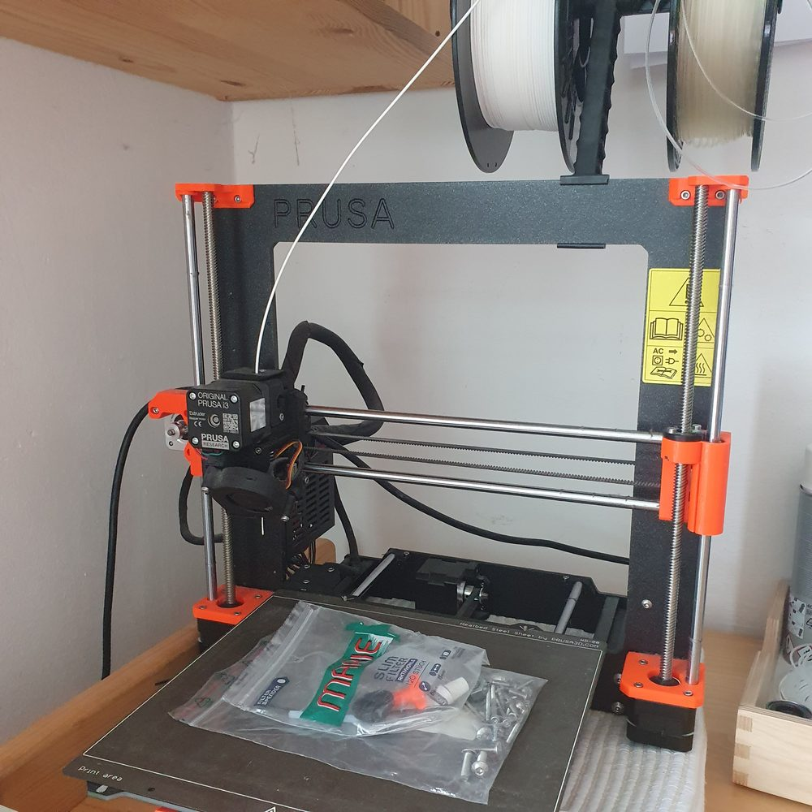
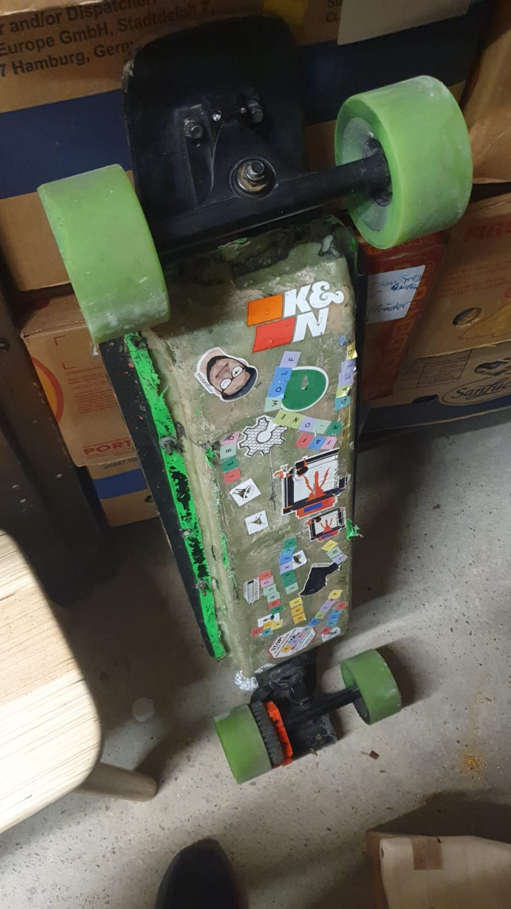

Passionierter Lerner
Ich studiere Maschinenbau an der TU Wien – der besten Uni, die es am Karlsplatz gibt 😉. Neue Themen zu durchdringen ist für mich der beste Teil der Arbeit.
Maschinenbau · Wien
Junger Techniker aus Wien, Maschinenbau-Student an der TU Wien. Ich baue Dinge, die sich bewegen – von 3D-gedruckten Teilen über E-Boards bis hin zu Code.
إنما النصر صبر ساعة
„Wo doch der Sieg nur das Warten einer Stunde ist."
Über mich
Mein Ziel ist es, ein Tausendsassa zu sein – darum liebe ich es, ständig Neues zu lernen.
Ich studiere Maschinenbau an der TU Wien – der besten Uni, die es am Karlsplatz gibt 😉. Neue Themen zu durchdringen ist für mich der beste Teil der Arbeit.
Erfahrung in CAD und FDM-Druck, dazu Programmierkenntnisse. Elektromotoren haben es mir besonders angetan – eine Batterie habe ich auch schon selbst zusammengebaut. 🚀
Ich bin immer auf der Suche nach neuen Herausforderungen und freue mich darauf, mit dir zusammenzuarbeiten! 💪😊
Projekte

Additive Fertigung erlaubt es, eine Idee am selben Tag in der Hand zu halten. Vom CAD-Modell bis zum fertigen Bauteil mache ich den ganzen Weg selbst.

Ein elektrisches Skateboard, komplett selbst gebaut: Akku, Motor, ESC und selbstgefertigte Zahnräder.
Den Harvard-Kurs CS50 abgeschlossen und dabei Python, C, SQL, HTML, CSS und JavaScript gelernt – diese Seite ist das Abschlussprojekt daraus.
Nachweise
Persönliche Daten und Unterschriften sind in den PDFs geschwärzt. Die vollständigen Originale gebe ich auf Anfrage gerne weiter.